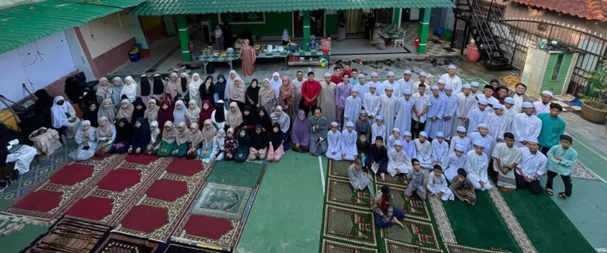
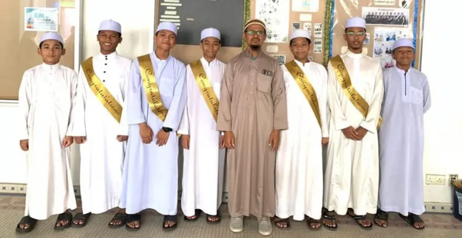
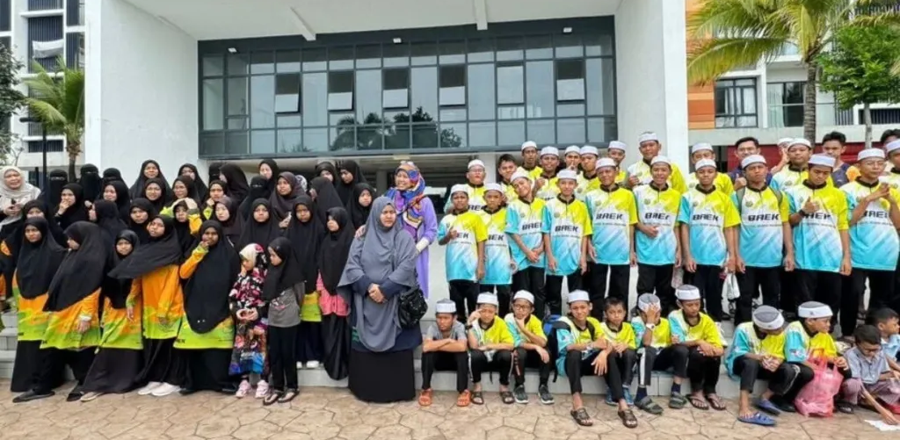

Life at the Home
Baitul Ehsan Al-Khairi Organization implements various activities every year for the benefit of the Muslim community, including Qurban rites, Al-Quran memorization competitions, flood relief aid, Ramadan assistance, and Iftar gatherings. Additionally, Baitul Ehsan strives to assist Muslims in Cambodia, Vietnam, and Chad who face clean water shortages by constructing wells, providing water tanks, and offering other forms of aid. These initiatives aim to alleviate their suffering and ensure access to clean water sources.
All the activities mentioned above are intended to strengthen Islamic brotherhood, assist the needy, and increase charitable deeds, in line with Islamic teachings that encourage mutual assistance, kindness, and sacrifice to achieve the pleasure of Allah SWT.
Activities
Eid al-Adha
All residents of Baitul Ehsan Al-Khairi gathered to celebrate Hari Raya Aidiladha at Ma’had Tahfiz Baitul Ehsan Al-Khairi lil Banin, Gombak.
Musabaqah Taj Al-Wiqar
7 male students and 8 female students from Baitul Ehsan Al-Khairi participated in the Al-Quran memorization competition (musabaqah) organized by “AL-AQSA INTEGRATED SCHOOL”. And Alhamdulillah, 3 of them won 1st, 2nd, and 3rd place.
Trip to Kuantan
Annual trip of Baitul Ehsan Al-Khairi. Alhamdulillah, this year we were sponsored by several loyal donors of Baitul Ehsan for this trip to TIMUR BAY RESORT in Kuantan, Pahang. This trip made all the students of Baitul Ehsan very happy and served as motivation to continue their journey. Jazakumullahu khairan and thousands of thanks are expressed to all donors of Baitul Ehsan Al-Khairi.